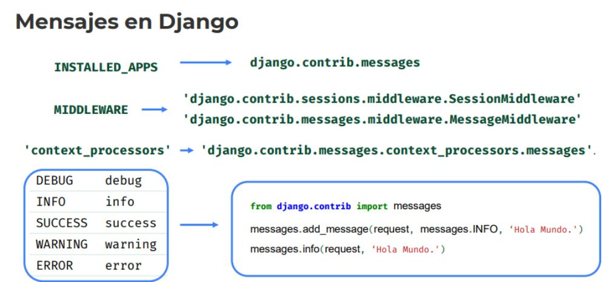

* Hace muchas validaciones, podemos sobreescribirlas.
is_valid() -> Con is_valid.. Repasa todos los métodos.
- Si hay un error, larga una excepción, de validación.
* Hace muchas validaciones, podemos sobreescribirlas.
is_valid() -> Con is_valid.. Repasa todos los métodos.
- Si hay un error, larga una excepción, de validación.
Desarrollo Django
1. Recordemos
2. ¿Qué es un Widget?
Un widget es la representación de Django de un elemento HTML de
entrada. El widget maneja la representación del HTML y la extracción
de datos de un diccionario GET/POST que corresponde al widget.
WIDGET != CAMPO FORMULARIO
3. Widgets por defecto
django.forms.widgets
4. Clase abstracta Widget
Proporciona atributo attrs
nombre = forms.CharField(widget=forms.TextInput(attrs={'class’: ‘clase_css'}))
-> Forma en la cual modificamos los atributos del widget
5. Clase interna Media
from django import forms
class CalendarWidget(forms.TextInput): -> Modificamos nuestro propio widget, como CalendarWidget
class Media:
css = { 'all': ('pretty.css',) }
js = ('animations.js', 'actions.js')
* Esto lo podemos cambiar, es decir, cambiamos lo que viene por defecto.
6. Recordemos el ciclo de los formularios
7. Validaciones en Formularios
* Hace muchas validaciones, podemos sobreescribirlas.
is_valid() -> Con is_valid.. Repasa todos los métodos.
- Si hay un error, larga una excepción, de validación.
8. Mensajes en Django

Con esto podemos usar un framework para los mensajes, tanto de backend y frontend
INSTALLED_APPS -> django.contrib.messages
MIDDLEWARE -> 'django.contrib.sessions.middleware.SessionMiddleware'
-> 'django.contrib.messages.middleware.MessageMiddleware'
'context_processors' -> 'django.contrib.messages.context_processors.messages'.
DEBUG debug
INFO info
SUCCESS success -> from django.contrib import messages
WARNING warning messages.add_message(request, messages.INFO, ‘Hola Mundo.')
ERROR error messages.info(request, ‘Hola Mundo.')
{% if messages %}
< ul class="messages">
{% for message in messages %}
< li{% if message.tags %} class="{{ message.tags }}"{% endif %}>{{ message }}
{% endfor %}
< /ul>
{% endif %}
----------------------- Ejemplo práctico.
----------------------- En la vista armada para contacto()
Desde urls.py..
from django.urls import path
from . import views
from django.conf import settings
from django.conf.urls.static import static
urlpatterns = [
path('', views.index, name="index"),
path('lenguajes', views.lenguajes, name="pepe"),
path('contacto', views.contacto, name="contacto")
]
Desde views.py
from audioop import reverse
from datetime import datetime
from django.shortcuts import redirect, render
from django.conf import settings
from .forms import ContactoForm
from django.contrib import messages
def index(request):
saludos = ['Hola', 'Hello', 'Olá', "Buenas"]
idioma_saludo = {'en': 'Hello', 'es': 'Hola', 'br': 'Olá'}
return render(request, "hola_mundo/index.html", {"hoy": datetime.now, "saludos": saludos, "idioma_saludos": idioma_saludo})
def lenguajes(request):
idiomas = ['English', 'Español', 'Portugues', 'Alemán']
return render(request, "hola_mundo/lenguajes.html", {"lenguajes": idiomas})
def contacto(request):
if request.method == "POST":
# Creao la instancia populada con los datos cargados en pantalla
contacto_form = ContactoForm(request.POST)
# Valido y proceso los datos.
if contacto_form.is_valid(): -> Acá tenemos el is_valid()
messages.set_level(request, messages.DEBUG)
messages.success(request, "Formulario cargado con éxito")
messages.debug(request, "DEBUGG") -> Acá agregamos los mensajes, que deseemos.
messages.info(request, "Info importante")
messages.warning(request, "Algo anda mal")
messages.error(request, "NO ANDA")
else:
# Creo el formulario vacío con los valores por defecto
contacto_form = ContactoForm() -> Este lo creamos en forms.py
return render(request, "hola_mundo/contacto.html", {'contacto_form': contacto_form})
Ahora en forms.py
from django import forms
from django.core import validators
from django.forms import ValidationError
def messi_validate(value):
if not value or str(value).upper() != "MESSI":
raise ValidationError("No puede no ser Messi", code="error_messi",) -> Este es nuestro validador, en caso de que salta, tira una excepcion.
class ContactoForm(forms.Form):
TORNEO_CHOICES = (
(1, "Champions"),
(2, "Supercopa"),
(3, "Copa Argentina"),
(4, "LPF"),
)
nombre = forms.CharField(label="Contacto:", required=False, max_length=10)
apellido = forms.CharField(label="Apellido de contacto", required=False)
email = forms.EmailField()
sitio_favorito = forms.URLField(label="Sitio Favorito")
nacimiento = forms.DateField(widget=forms.SelectDateWidget(years=['1980', '1981', '1982'])) -> Acá modificamos el widget que viene por defecto
jugador_favorito = forms.CharField(label="Jugador Favorito:", validators=(messi_validate,)) -> Aca generamos nuestro propio validador..
torneo_favorito = forms.ChoiceField(label="Torneo Favorito:", choices=TORNEO_CHOICES) -> Otra widget con un selector al cual le pasamos una tupla.
def clean_torneo_favorito(self): -> clean_NOMBREdelCampo.. Self hace referencia al form
data = self.cleaned_data['torneo_favorito']
if data != "1": -> apuntamos a la selección necesaria..
raise ValidationError("No podes no elegir a la Champions")
return data
Y dentro de templates, para nuestra app de hola_mundo.. Tenemos el contacto.html
{% extends "base.html" %}
{% block titulo %}
Contacto
{% endblock titulo %}
{% block contenido %}
{% if messages %}
< ul class="messages">
{% for message in messages %}
< li{% if message.tags %} class="{{ message.tags }}"{% endif %}> -> Aca metemos los messages
{% if message.level == DEFAULT_MESSAGE_LEVELS.ERROR %}Important: {% endif %}
{{ message }}
< /li>
{% endfor %}
< /ul>
{% endif %}
< form action="{% url "contacto" %}" method="post">
{% csrf_token %}
< table>
{{ contacto_form.as_table }} -> Representamos el formulario.
< /table> * De acuerdo a la manera que lo armemos, como tabla, parrafo o formulario, lo armamos como necesitemos.
< input type="submit" value="Contactar">
< /form>
{% endblock contenido %}
{% comment "formato tabla" %}
< table>
{{ contacto_form.as_table }}
< /table>
{% endcomment %}
{% comment "formato lista" %}
< ul>
{{ contacto_form.as_ul }}
< /ul>
{% endcomment %}
{% comment "formato p" %}
{{ contacto_form.as_p}}
{% endcomment %}
* Las validaciones y los formularios se pueden armar por separado, pero..
Django nos facilita el proceso haciendo todo de manera rápida y es eficaz.
Podemos además agrear un validacion especifica de un campo cuando limpio los datos con el clean_
Cuando necesitamos validar campos asociados solo usamos clean
Las expeciones se lanzan desde el Backend..
En el frontend, aparecen los mensajes que vienen desde el Backend.